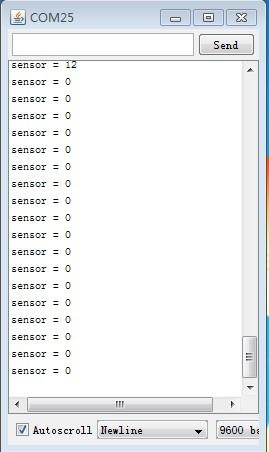
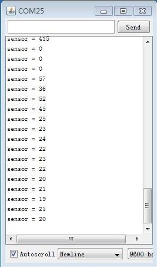
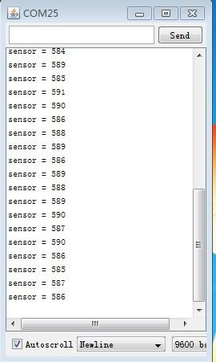
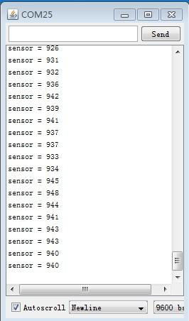
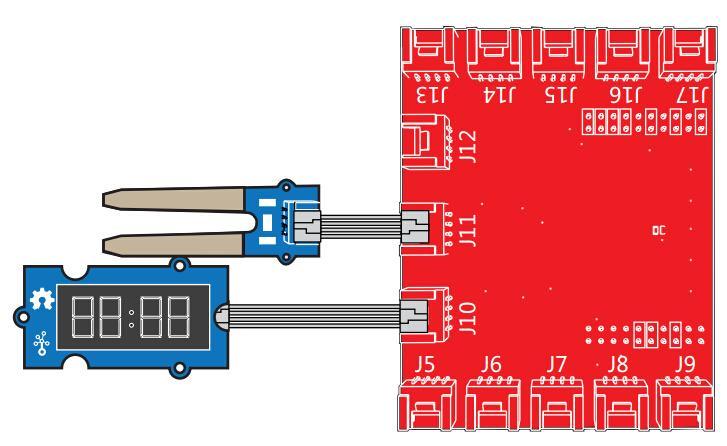

Grove - Moisture Sensor is used to detect soil moisture accurately for plants. The usage for this module is simplified. You can just insert this module into soil and conenct it to single-board microcontroller with Grove cable. Then you can get readings for soil mositure. It is compatible with 3.3 V and 5 V input voltage which make it more adaptive. You can use this module to build loads of smart plant-attending applications.
Note that do not insert all module into soil which probably damage this module. Just insert the leg(golden) of this module into soil.
Note: This sensor isn't protected from contamination or exposure of the control circuitry to water and may be prone to electrolytic corrosion across the probes, so it is not advisable to be left in place or used outdoors.

| Item | Parameter | Min | Typical | Max | Unit |
|---|---|---|---|---|---|
| Voltage | - | 3.3 | ~ | 5 | V |
| Current | - | 0 | ~ | 35 | mA |
| Output Value | Sensor in dry soil | 0 | ~ | 300 | / |
| Sensor in humid soil | 300 | ~ | 700 | / | |
| Sensor in water | 700 | ~ | 950 | / |
Following documents help in getting the user started with Grove.
This demo shows build a simple applicaition with Arduino platform to monitor the environment for plants. When soil moisture descreases, the sensor readings will decrease.
int sensorPin = A0; // select the input pin for the potentiometer int sensorValue = 0; // variable to store the value coming from the sensor void setup() { // declare the ledPin as an OUTPUT: Serial.begin(9600); } void loop() { // read the value from the sensor: sensorValue = analogRead(sensorPin); delay(1000); Serial.print("sensor = " ); Serial.println(sensorValue); }
|  |  |  |  |
| Sensor in air | Sensor in dry soil | Sensor in humid soil | Sensor in water |
This demo shows that building a simple applicaiton to attend your plants smartly on LaunchPad platform. With this, you will know whether your plant needs water or not by observing the results from the output of the sensor.

/* Moisture-Sensor The following sketch demonstrates a simple application of sensing the moisture of the soil. You can know whether a plant needs water or not by observing the results that the sensor outputs. The circuit: * Moisture-Sensor attached to pin 24 (J6 plug on Grove Base BoosterPack) * one side pin (either one) to ground * the other side pin to +VCC * LED anode (long leg) attached to RED_LED * LED cathode (short leg) attached to ground * Note: This example code is in the public domain. http://seeedstudio.com/wiki/Grove_-_Moisture_Sensor */ #include "TM1637.h" /* Macro Define */ #define CLK 39 /* clock pin */ #define DIO 38 /* data pin */ #define BLINK_LED RED_LED /* LED to blink */ #define MOISTURE_PIN 24 /* pin for moisture sensor */ #define THRESHOLD_VALUE 300 /* threshold for watering the flowers */ #define ON HIGH /* led on */ #define OFF LOW /* led off */ #define _handle_led(x) digitalWrite(BLINK_LED, x) /* handle led */ /* Global Varibles */ TM1637 tm1637(CLK, DIO); /* create a displaying object */ int analog_value = 0; /* a varible to store the value coming from rotary angle sensor */ int8_t bits[4] = {0}; /* array to store the single bits */ /* the setup() method runs once when the sketch starts */ void setup() { /* Initialize 4-digital display */ tm1637.init(); tm1637.set(BRIGHT_TYPICAL); /* declare the red_led pin as an OUTPUT */ pinMode(BLINK_LED, OUTPUT); } /* the loop() method runs over and over again */ void loop() { analog_value = analogRead(MOISTURE_PIN); /* read the value from the sensor */ /* if the value is smaller than threshold, turn on led */ if(analog_value < THRESHOLD_VALUE) { _handle_led(ON); } else { _handle_led(OFF); } memset(bits, 0, 4); /* reset array when we use it */ for(int i = 3; i >= 0; i--) { /* get single bits of the analog value */ bits[i] = analog_value % 10; analog_value = analog_value / 10; tm1637.display(i, bits[i]); /* display by 4-digital display */ } delay(200); }
cd yourpath/GrovePi/Software/Python/
nano grove_moisture_sensor.py # "Ctrl+x" to exit #
import time import grovepi # Connect the Grove Moisture Sensor to analog port A0 # SIG,NC,VCC,GND sensor = 0 while True: try: print grovepi.analogRead(sensor) time.sleep(.5) except KeyboardInterrupt: break except IOError: print "Error"
sudo python grove_moisture_sensor.py
Copyright (c) 2008-2016 Seeed Development Limited (www.seeedstudio.com / www.seeed.cc)